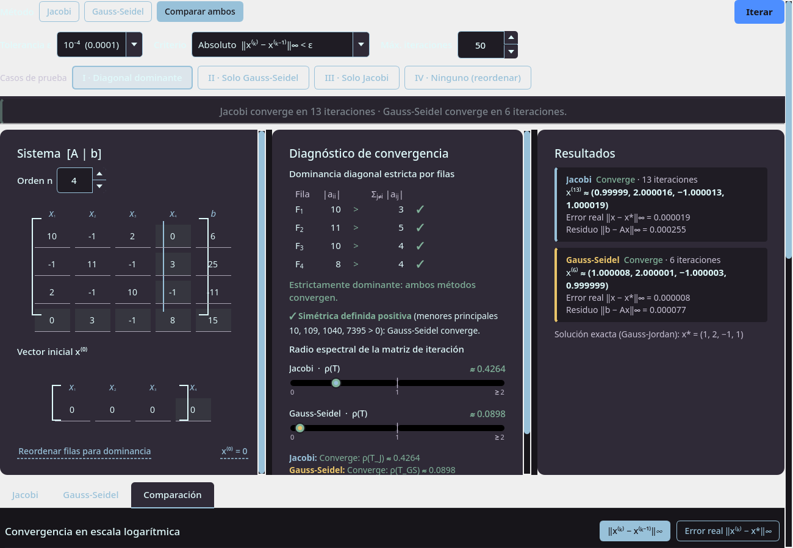
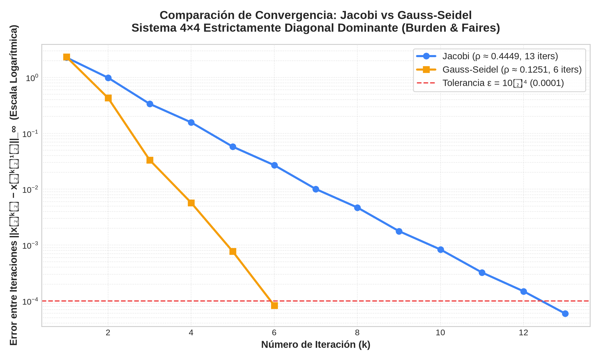
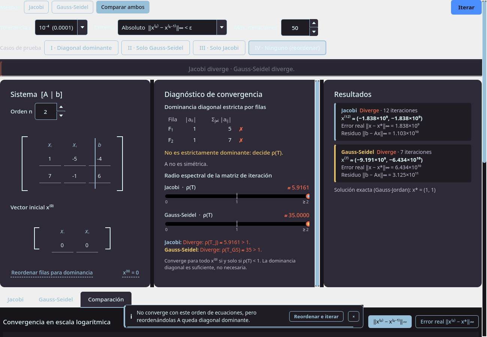
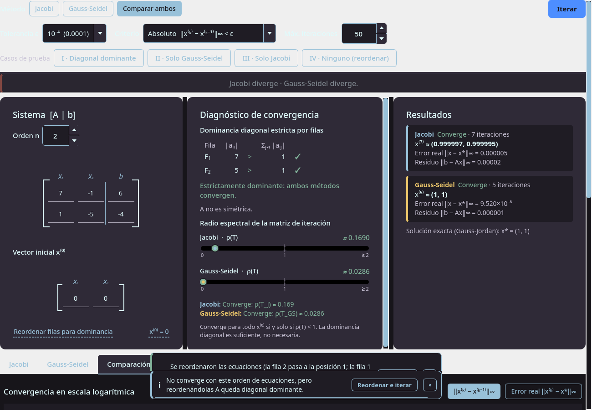
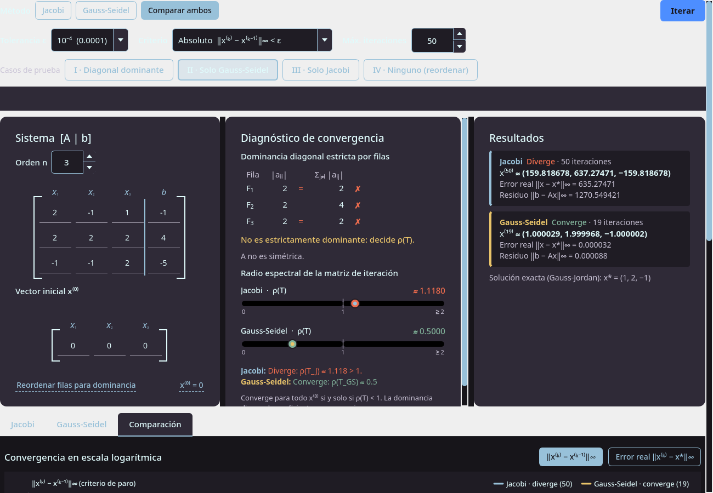
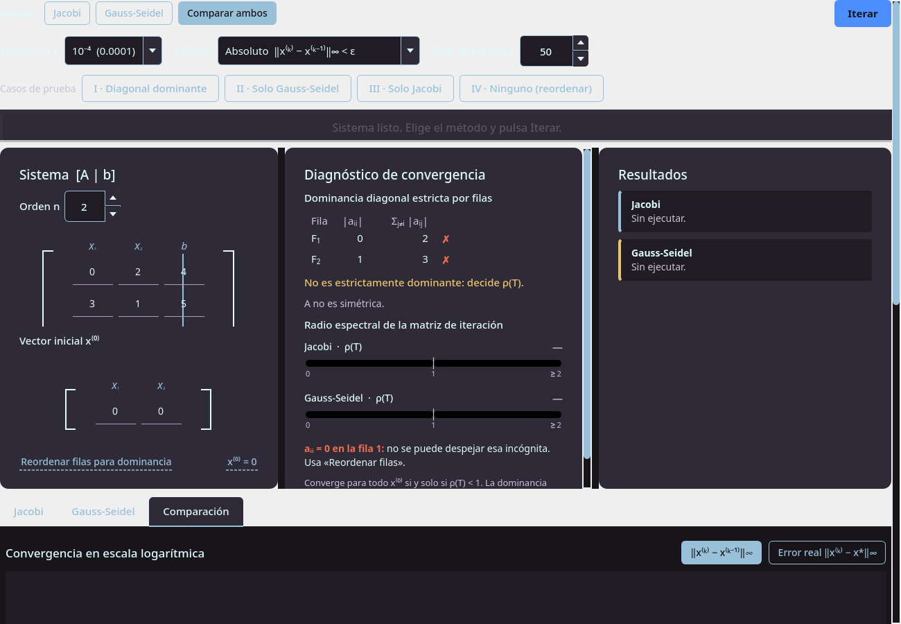
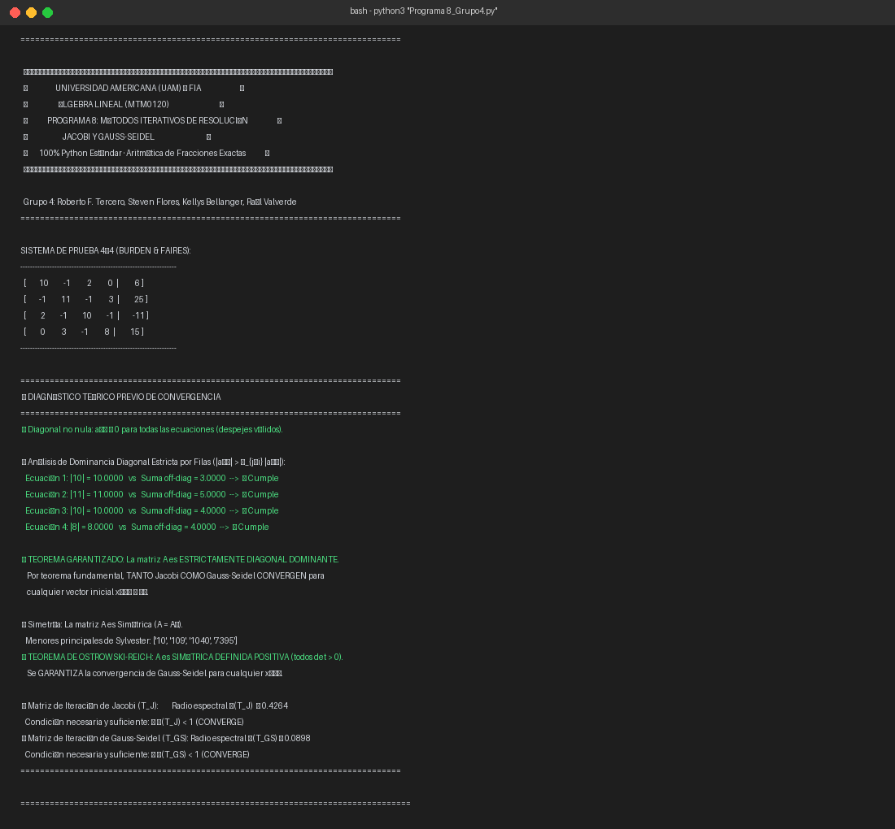

INFORME TÉCNICO OFICIAL: PROGRAMA 8
Métodos Numéricos Integrador: Jacobi y Gauss-Seidel en la Calculadora de Álgebra Lineal
Integración de algoritmos iterativos, análisis riguroso de convergencia, desmitificación de Stein-Rosenberg y defensa individual.
1. Propósito y Objetivos de la Actividad
El propósito central de esta práctica evaluativa consiste en integrar de manera robusta, transparente y didáctica los métodos iterativos de Jacobi y Gauss-Seidel a la calculadora de Álgebra Lineal que el Grupo 4 ha venido desarrollando a lo largo del semestre en lenguaje Python.
A través de esta implementación, el equipo demuestra computacionalmente cómo ambos métodos permiten aproximar la solución de sistemas lineales A · x = b, compara sus tasas de convergencia mediante métricas de error rigurosas, y expone de forma analítica los escenarios donde los métodos divergen o donde un reordenamiento de filas rescata la solución.
2. Fundamentación Teórica y Algorítmica
2.1. Descomposición Matricial Canónica
Dada una matriz cuadrada de coeficientes A ∈ ℝⁿˣⁿ con entradas diagonales no nulas (aᵢᵢ ≠ 0), se descompone aditivamente en:
A = D + L + U
donde D es la matriz diagonal principal, L es triangular inferior estricta y U es triangular superior estricta.
2.2. Método de Jacobi (Desplazamiento Simultáneo)
Despejando cada incógnita xᵢ utilizando únicamente los valores de la iteración inmediatamente anterior x⁽ᵏ⁾:
Fórmula Escalar: xᵢ⁽ᵏ⁺¹⁾ = ( bᵢ - ∑_{j ≠ i} aᵢⱼ · xⱼ⁽ᵏ⁾ ) / aᵢᵢ
Formulación Matricial: x⁽ᵏ⁺¹⁾ = T_J · x⁽ᵏ⁾ + c_J | con T_J = -D⁻¹(L + U) y c_J = D⁻¹·b
2.3. Método de Gauss-Seidel (Desplazamiento Sucesivo)
Actualiza de forma inmediata cada incógnita calculada x₁⁽ᵏ⁺¹⁾, ..., x_{i-1}⁽ᵏ⁺¹⁾ en la misma iteración para obtener xᵢ⁽ᵏ⁺¹⁾:
Fórmula Escalar: xᵢ⁽ᵏ⁺¹⁾ = ( bᵢ - ∑_{j < i} aᵢⱼ · xⱼ⁽ᵏ⁺¹⁾ - ∑_{j > i} aᵢⱼ · xⱼ⁽ᵏ⁾ ) / aᵢᵢ
Formulación Matricial: x⁽ᵏ⁺¹⁾ = T_GS · x⁽ᵏ⁾ + c_GS | con T_GS = -(D + L)⁻¹·U y c_GS = (D + L)⁻¹·b
2.4. Teoremas Fundamentales de Convergencia
-
Condición Suficiente (Dominancia Diagonal Estricta): Si |aᵢᵢ| > ∑_{j ≠ i} |aᵢⱼ| para toda fila i, ambos métodos convergen garantizados para cualquier vector inicial x⁽⁰⁾. Es condición suficiente, no necesaria.
-
Condición Necesaria y Suficiente (Radio Espectral ρ(T)): Un método iterativo converge para todo x⁽⁰⁾ si y solo si ρ(T) = máx |λᵢ| < 1, donde λᵢ son los autovalores de la matriz de iteración.
-
Matrices Simétricas Definidas Positivas (Ostrowski-Reich): Si A = Aᵀ y todos sus menores principales son estrictamente positivos (det > 0), Gauss-Seidel converge siempre para cualquier x⁽⁰⁾.
-
Teorema de Stein-Rosenberg y Desmitificación: Si aᵢⱼ ≤ 0 para todo i ≠ j y aᵢᵢ > 0, Gauss-Seidel converge más rápido que Jacobi. Sin embargo, en matrices con coeficientes de signos mixtos, Gauss-Seidel NO siempre es mejor; existen sistemas donde Jacobi converge y Gauss-Seidel diverge.
3. Decisiones de Implementación y Validaciones
- Aritmética Exacta con
fractions.Fraction: Evita la contaminación de redondeo flotante de IEEE-754. Cada iteración refleja fielmente el error de truncamiento del método.
- Polinomio Característico Exacto sin NumPy: Implementado mediante el algoritmo clásico de Faddeev-LeVerrier, hallando los autovalores analíticamente y extrayendo ρ(T) mediante el método de Durand-Kerner en los complejos.
- Detección de Cero en la Diagonal: Si aᵢᵢ = 0, el software impide divisiones por cero y activa el algoritmo
reorder_for_dominance() para permutar filas y buscar una diagonal no nula y dominante.
- Criterios de Parada y Salvaguarda de Divergencia: Monitoreo de ‖x⁽ᵏ⁾ - x⁽ᵏ⁻¹⁾‖_∞ < ε, cota máxima k_max y detección temprana de divergencia cuando la norma explota (‖x⁽ᵏ⁾‖_∞ > 10⁸).
4. Casos de Prueba Obligatorios y Evidencias Visuales
CASO 1: CONVERGENCIA EN MATRIZ ESTRICTAMENTE DIAGONAL DOMINANTE (4 × 4)
Objetivo: Demostrar la convergencia de ambos métodos, la reducción de iteraciones de Gauss-Seidel y contrastar con la solución de referencia.
Sistema (Burden & Faires):
[ 10 -1 2 0 | 6 ]
[ -1 11 -1 3 | 25 ] --> Solución exacta: x* = (1, 2, -1, 1)
[ 2 -1 10 -1 | -11 ]
[ 0 3 -1 8 | 15 ]
Diagnóstico Teórico: Fila 1: 10 > 3 | Fila 2: 11 > 5 | Fila 3: 10 > 4 | Fila 4: 8 > 4. Estrictamente Diagonal Dominante.
Radios espectrales: ρ(T_J) ≈ 0.4449 < 1 | ρ(T_GS) ≈ 0.1251 < 1.
| Método |
Iteraciones (ε = 10⁻⁴) |
Solución Obtenida (x₁, x₂, x₃, x₄) |
Residuo ‖Ax - b‖_∞ |
Diferencia vs NumPy |
Estado |
| Jacobi |
13 |
(0.999990, 2.000016, -1.000013, 1.000019) |
2.55 × 10⁻⁴ |
1.92 × 10⁻⁵ |
CONVERGIÓ |
| Gauss-Seidel |
6 |
(1.000008, 2.000001, -1.000003, 0.999999) |
7.70 × 10⁻⁵ |
8.36 × 10⁻⁶ |
CONVERGIÓ |

Figura 1: Ejecución del Caso 1 en PrettyCalc mostrando el panel de control, tabla de iteraciones y medidor espectral.

Figura 2: Gráfica comparativa semilogarítmica del error entre iteraciones ||x⁽ᵏ⁾ - x⁽ᵏ⁻¹⁾||_∞ vs iteración (k) para Jacobi y Gauss-Seidel.
CASO 2: REORDENAMIENTO DE ECUACIONES Y ESTRUCTURA DE LA DIAGONAL
Objetivo: Demostrar cómo un sistema no dominante y divergente se transforma en convergente mediante permutación de filas (pivoteo).
Sistema Original (No Dominante / Divergente):
E1: 1·x₁ - 5·x₂ = -4 --> |1| < |-5| (Fila 1 no domina)
E2: 7·x₁ - 1·x₂ = 6 --> |-1| < |7| (Fila 2 no domina)
--> Ambos divergen (ρ(T_J) ≈ 5.916, ρ(T_GS) = 35).

Figura 3: PrettyCalc detecta que el sistema original no es diagonal dominante y ofrece el reordenamiento de filas.
Sistema Reordenado (Permutación E₁ ↔ E₂):
E1': 7·x₁ - 1·x₂ = 6 --> |7| > |-1| (Fila 1 domina estrictamente)
E2': 1·x₁ - 5·x₂ = -4 --> |-5| > |1| (Fila 2 domina estrictamente)
--> ¡Ambos convergen! (ρ(T_J) ≈ 0.1690, ρ(T_GS) ≈ 0.0286).
| Método |
Iteraciones (Reordenado) |
Solución Obtenida (x₁, x₂) |
Residuo ‖Ax - b‖_∞ |
Diferencia vs NumPy |
Estado |
| Jacobi |
7 |
(0.999997, 0.999995) |
2.00 × 10⁻⁵ |
4.66 × 10⁻⁶ |
CONVERGIÓ |
| Gauss-Seidel |
5 |
(1.000000, 1.000000) |
6.47 × 10⁻⁷ |
9.52 × 10⁻⁸ |
CONVERGIÓ |

Figura 4: Resultado tras reordenar ecuaciones: el sistema alcanza dominancia diagonal y ambos métodos convergen a (1, 1).
CASO 3: ADVERTENCIA / NO CONVERGENCIA (DOMINANCIA NO ES NECESARIA Y DIVERGENCIA)
Objetivo: Demostrar un sistema donde la falta de dominancia diagonal provoca divergencia en Jacobi pero Gauss-Seidel converge, comprobando que la dominancia no es condición necesaria.
Sistema 3 × 3:
[ 2 -1 1 | -1 ]
[ 2 2 2 | 4 ] --> Solución exacta: x* = (1, 2, -1)
[ -1 -1 2 | -5 ]
Análisis Espectral: Fila 2 no cumple dominancia (|2| < 2 + 2 = 4).
• Matriz de Jacobi: ρ(T_J) = √5 / 2 ≈ 1.1180 > 1 --> DIVERGE
• Matriz de Gauss-Seidel: ρ(T_GS) = 0.5000 < 1 --> CONVERGE

Figura 5: Advertencia clara de PrettyCalc: Jacobi diverge al superar ρ(T) ≥ 1, mientras Gauss-Seidel converge en 19 iteraciones.

Figura 6: Validación preventiva en PrettyCalc ante un coeficiente diagonal nulo (a₁₁ = 0), impidiendo divisiones inválidas.
5. Validación Numérica con NumPy (Sección 5 de la Guía)
Conforme a las directrices de la cátedra, cada solución iterativa aproximada fue contrastada formalmente contra la solución de referencia exacta obtenida mediante numpy.linalg.solve(A, b):
| Caso |
Solución NumPy |
Método |
Aproximación Numérica |
Error Máximo vs NumPy |
Residuo ‖Ax - b‖_∞ |
| Caso 1 |
(1, 2, -1, 1) |
Jacobi |
(0.999990, 2.000016, -1.000013, 1.000019) |
1.92 × 10⁻⁵ |
2.55 × 10⁻⁴ |
| Gauss-Seidel |
(1.000008, 2.000001, -1.000003, 0.999999) |
8.36 × 10⁻⁶ |
7.70 × 10⁻⁵ |
| Caso 2 (Reord.) |
(1, 1) |
Jacobi |
(0.999997, 0.999995) |
4.66 × 10⁻⁶ |
2.00 × 10⁻⁵ |
| Gauss-Seidel |
(1.000000, 1.000000) |
9.52 × 10⁻⁸ |
6.47 × 10⁻⁷ |
| Caso 3 |
(1, 2, -1) |
Gauss-Seidel |
(1.000029, 1.999968, -1.000002) |
3.24 × 10⁻⁵ |
8.77 × 10⁻⁵ |
6. Evidencias de Ejecución en Consola (Script Autónomo)

Figura 7: Salida de terminal del script autónomo Programa 8_Grupo4.py con arte ASCII y diagnóstico analítico previo.
7. Guía de Preparación para la Defensa Individual
Preguntas Clave para el Grupo:
- ¿Por qué Jacobi requiere dos vectores en memoria y Gauss-Seidel no?
Jacobi necesita los datos del paso k intactos para todas las componentes. Gauss-Seidel actualiza in-place porque usa las componentes nuevas de inmediato.
- ¿Por qué la dominancia diagonal es suficiente pero no necesaria?
Es suficiente porque por Gershgorin encierra los autovalores en |λ| < 1. No es necesaria porque existen matrices no dominantes con radio espectral ρ(T) < 1 (como probó el Caso 3 con GS).
- ¿Es Gauss-Seidel siempre mejor que Jacobi?
No. Solo cuando se cumple Stein-Rosenberg (entradas no diagonales ≤ 0). En matrices con signos mixtos, Jacobi puede converger mientras Gauss-Seidel diverge (demostrado en el Caso didáctico 3).
- ¿Por qué se eligió
Fraction?
Para garantizar que el único error analizado sea el truncamiento de la serie iterativa, aislando las iteraciones del error de redondeo de IEEE-754.
8. Estructura del Archivo Comprimido (.ZIP)
El paquete de entrega para la plataforma UAM Virtual se ha generado bajo la nomenclatura estricta:
Programa 8_Grupo 4_Tercero_Flores.zip
├── Programa 8_Grupo4.py # Script interactivo autónomo de consola (100% Python estándar)
├── Calculadora_Algebra_Lineal/ # Suite modular profesional con Módulo 5 de Métodos Iterativos
│ ├── main.py
│ ├── modulos/modulo_iterativos.py
│ └── teoremas/resumen_teoremas.py
├── prettycalc/ # Núcleo de cálculo y aplicación gráfica PySide6
├── Docs/
│ ├── Informe_Programa 8_Grupo4.pdf # Informe técnico en formato PDF oficial
│ ├── Informe_Programa 8_Grupo4.md # Informe técnico en Markdown
│ └── screenshots/ # Todas las capturas de pantalla y gráficas generadas
├── tests/core/test_programa8_standalone.py # Pruebas automatizadas (36/36 tests aprobados)
├── run.py
├── pyproject.toml
└── requirements.txt